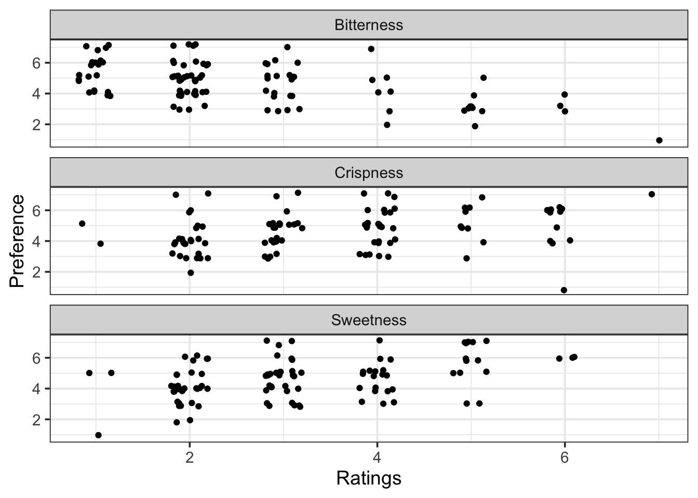
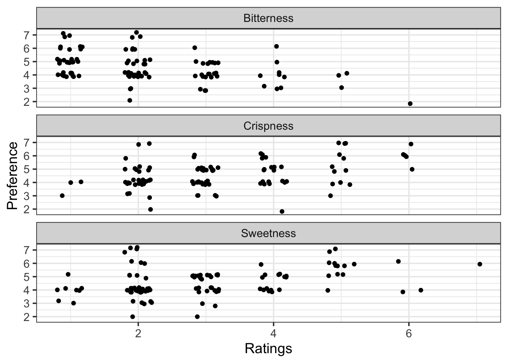
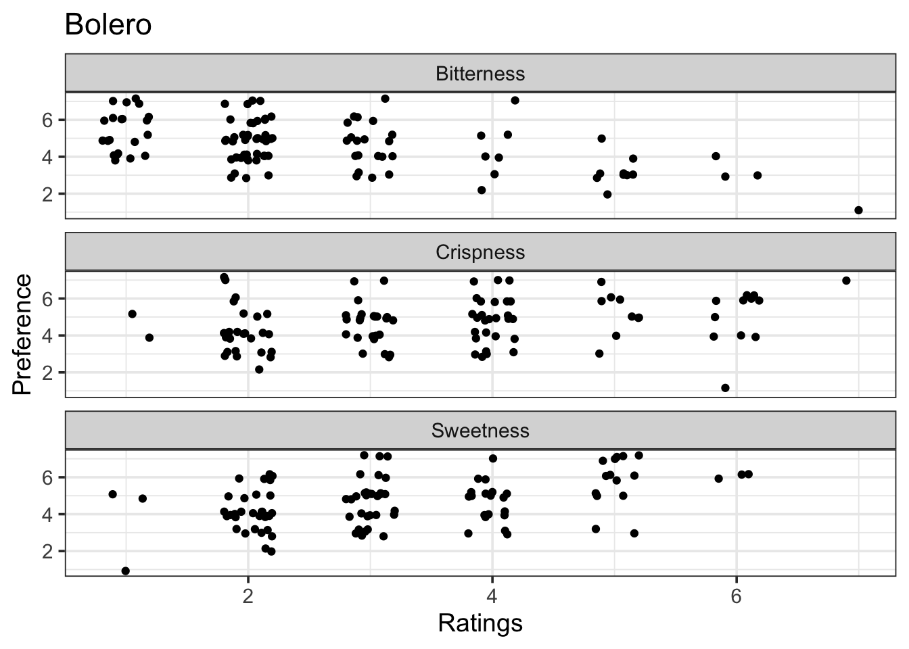
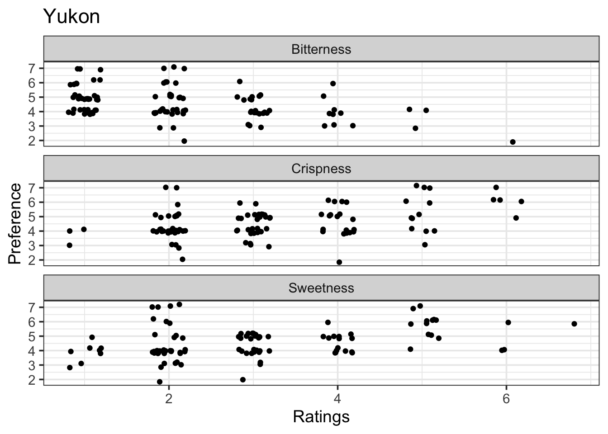
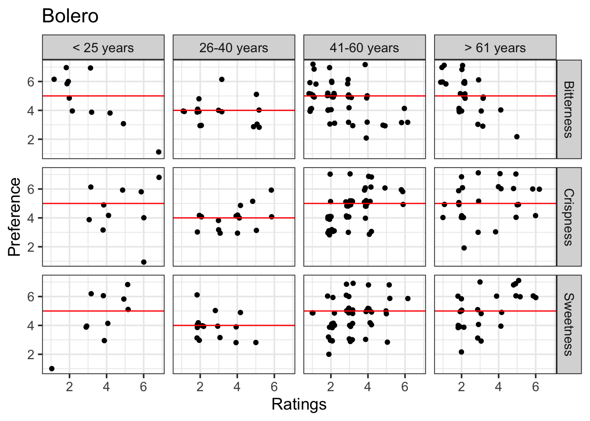
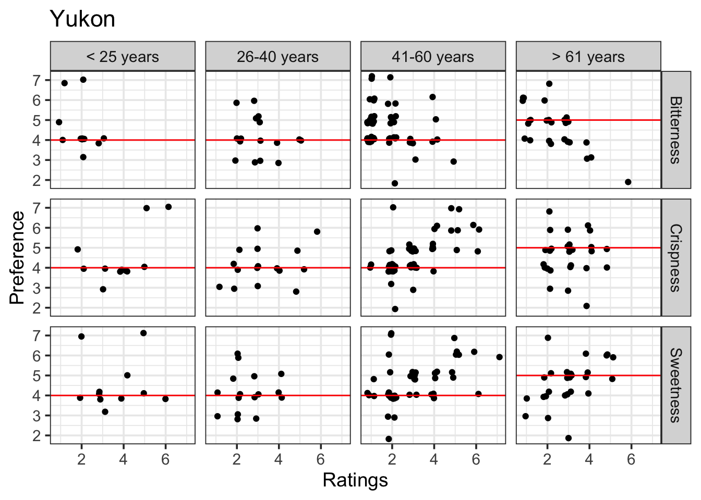

Neat and tidy data exploration with list-columns and purrr
Peter Kamerman
19 June 2019I often find myself having to generate a multitude of exploratory plots and tables when I first lay my hands on a new dataset. An example would be having to explore the data of every indiviudual or animal, looking for any ‘funny numbers’, before proceeding with the anaylsis. This post describes one of the processes I sometimes go through to explore data using the purrr package to work with list-columns within nested dataframes.
Get some data
To start we need some data. I will be using carrots data from the carrots data package (devtools::install_github("kamermanpr/carrots")). The carrots package contains data on, you guessed it, carrots. The dataset, which is a pared-down version of a larger carrots dataset from the lmerTest package, is briefly described in the figure and printouts below.
# Install package if not already installed
if('carrots' %in% installed.packages()[, "Package"] == FALSE){
devtools::install_github("kamermanpr/carrots")
}
# Load the package
library(carrots)
# Load the data
data(carrots)
# Quick peek at the data
## Dimensions
dim(carrots)## [1] 618 11## Classes 'tbl_df', 'tbl' and 'data.frame': 618 obs. of 11 variables:
## $ Product : Factor w/ 6 levels "Bolero","Major",..: 1 2 3 4 5 6 1 2 3 4 ...
## $ Consumer : Factor w/ 103 levels "168","169","171",..: 1 1 1 1 1 1 2 2 2 2 ...
## $ Frequency : Ord.factor w/ 5 levels "Once a week or more"<..: 1 1 1 1 1 1 1 1 1 1 ...
## $ Sex : Factor w/ 2 levels "Male","Female": 2 2 2 2 2 2 1 1 1 1 ...
## $ Age_group : Ord.factor w/ 4 levels "< 25 years"<"26-40 years"<..: 4 4 4 4 4 4 4 4 4 4 ...
## $ Employment_status: Ord.factor w/ 7 levels "Unskilled labourer"<..: 7 7 7 7 7 7 7 7 7 7 ...
## $ Income_group : Ord.factor w/ 4 levels "Low-income"<"Lower middle-income"<..: 2 2 2 2 2 2 2 2 2 2 ...
## $ Preference : int 4 4 5 5 5 4 6 5 5 5 ...
## $ Sweetness : int 2 2 4 3 4 2 5 2 5 2 ...
## $ Bitterness : int 4 2 2 2 1 3 1 2 2 2 ...
## $ Crispness : int 2 3 4 5 5 3 5 3 2 3 ...| Name | carrots |
| Number of rows | 618 |
| Number of columns | 11 |
| _______________________ | |
| Column type frequency: | |
| factor | 7 |
| numeric | 4 |
| ________________________ | |
| Group variables | None |
Variable type: factor
| skim_variable | n_missing | complete_rate | ordered | n_unique | top_counts |
|---|---|---|---|---|---|
| Product | 0 | 1.00 | FALSE | 6 | Bol: 103, Maj: 103, Nav: 103, Nel: 103 |
| Consumer | 0 | 1.00 | FALSE | 103 | 168: 6, 169: 6, 171: 6, 172: 6 |
| Frequency | 0 | 1.00 | TRUE | 5 | Onc: 432, Onc: 102, Onc: 54, Les: 18 |
| Sex | 0 | 1.00 | FALSE | 2 | Fem: 426, Mal: 192 |
| Age_group | 0 | 1.00 | TRUE | 4 | 41-: 300, > 6: 156, 26-: 96, < 2: 66 |
| Employment_status | 0 | 1.00 | TRUE | 7 | Ret: 162, Off: 150, Ski: 90, Uns: 66 |
| Income_group | 36 | 0.94 | TRUE | 4 | Upp: 240, Low: 222, Low: 84, Upp: 36 |
Variable type: numeric
| skim_variable | n_missing | complete_rate | mean | sd | p0 | p25 | p50 | p75 | p100 | hist |
|---|---|---|---|---|---|---|---|---|---|---|
| Preference | 2 | 1 | 4.58 | 1.16 | 1 | 4 | 4 | 5 | 7 | ▁▂▇▆▅ |
| Sweetness | 2 | 1 | 3.03 | 1.30 | 1 | 2 | 3 | 4 | 7 | ▇▅▃▂▁ |
| Bitterness | 0 | 1 | 2.28 | 1.20 | 1 | 1 | 2 | 3 | 7 | ▇▂▁▁▁ |
| Crispness | 3 | 1 | 3.15 | 1.33 | 1 | 2 | 3 | 4 | 7 | ▇▆▃▃▁ |
For this demonstration I only need some of the data, so I am going to select the columns that I want (Product, Age_group, Preference, Crispness, Sweetness, Bitterness), and filter the carrot types (Product) so that I only have Bolero and Yukon carrots.
# Load required package
library(dplyr)
# Select columns and filter data
clean_carrots <- carrots %>%
select(Product, Age_group, Sex,
Preference, Crispness,
Sweetness, Bitterness) %>%
filter(Product %in% c('Bolero', 'Yukon'))Crispness, sweetness, and bitterness are all attributes of the carrots and to my mind they should fall under a single attribute column. I can fix this problem using the pivot_longer function from the tidyr package.
# Load required packages
library(tidyr)
# Convert clean_carrots to long format
long_carrots <- clean_carrots %>%
pivot_longer(cols = c(Crispness, Sweetness, Bitterness),
names_to = 'Attributes',
values_to = 'Ratings')Take a look at the new dataset.
## # A tibble: 618 x 6
## Product Age_group Sex Preference Attributes Ratings
## <fct> <ord> <fct> <int> <chr> <int>
## 1 Bolero > 61 years Female 4 Crispness 2
## 2 Bolero > 61 years Female 4 Sweetness 2
## 3 Bolero > 61 years Female 4 Bitterness 4
## 4 Yukon > 61 years Female 4 Crispness 3
## 5 Yukon > 61 years Female 4 Sweetness 2
## 6 Yukon > 61 years Female 4 Bitterness 3
## 7 Bolero > 61 years Male 6 Crispness 5
## 8 Bolero > 61 years Male 6 Sweetness 5
## 9 Bolero > 61 years Male 6 Bitterness 1
## 10 Yukon > 61 years Male 6 Crispness 3
## # … with 608 more rowsWorking with list-columns
I think list-columns are great for rapidly analysing data across one or more grouping variables, while keeping intermediate and final outputs from an analysis nicely contained within a single dataframe.
For those of you unfamiliar with list-columns, they are columns in a dataframe that contain more than one piece of data per row within a column. Instead, each row of the column contain a list of two or more pieces of data. The figure below will hopefully give you some insight into what I mean by this description. Briefly, in the figure we have a standard dataframe with columns for brand of tomato sauce, country, and cost in each country. If we use brand of tomato sauce as a grouping variable, we can cram all the related data into one cell per row (note: it doesn’t compress the data), replacing the previous two columns with a new list-column. That is, a column consisting a series of lists.

The ultimate goal of this exploratory analysis is to look at the relationship between consumer carrot preference and carrot attributes (crispness, sweetness, and bitterness) for each carrot type according to age group. So, the first thing I need to do is to create a list-column of all the pieces of data with carrot type as a grouping variable.
Creating list-columns is simple with the help of the group_by function from the dpylr package, and the nest function from the tidyr package.
# Create a dataframe with a list-column called 'data'
diced_carrots <- long_carrots %>%
# First group the data by carrot type
group_by(Product) %>%
# Then 'nest' the remaining data into a list-column
nest()We now have a new dataframe with two columns, ‘Product’ and ‘data’. ‘Product’ contains the grouping variable (carrot type), while ‘data’ contain the rest of the data as a list column.
If we compare the original dataframe with the nested dataframe they look like this:
Original dataframe
## # A tibble: 618 x 6
## Product Age_group Sex Preference Attributes Ratings
## <fct> <ord> <fct> <int> <chr> <int>
## 1 Bolero > 61 years Female 4 Crispness 2
## 2 Bolero > 61 years Female 4 Sweetness 2
## 3 Bolero > 61 years Female 4 Bitterness 4
## 4 Yukon > 61 years Female 4 Crispness 3
## 5 Yukon > 61 years Female 4 Sweetness 2
## 6 Yukon > 61 years Female 4 Bitterness 3
## 7 Bolero > 61 years Male 6 Crispness 5
## 8 Bolero > 61 years Male 6 Sweetness 5
## 9 Bolero > 61 years Male 6 Bitterness 1
## 10 Yukon > 61 years Male 6 Crispness 3
## # … with 608 more rowsNested dataframe
## # A tibble: 2 x 2
## # Groups: Product [6]
## Product data
## <fct> <list>
## 1 Bolero <tibble [309 × 5]>
## 2 Yukon <tibble [309 × 5]>If we look inside the two rows of the list-column, we find the data associated with each of the carrot types.
## [[1]]
## # A tibble: 309 x 5
## Age_group Sex Preference Attributes Ratings
## <ord> <fct> <int> <chr> <int>
## 1 > 61 years Female 4 Crispness 2
## 2 > 61 years Female 4 Sweetness 2
## 3 > 61 years Female 4 Bitterness 4
## 4 > 61 years Male 6 Crispness 5
## 5 > 61 years Male 6 Sweetness 5
## 6 > 61 years Male 6 Bitterness 1
## 7 26-40 years Male 4 Crispness 6
## 8 26-40 years Male 4 Sweetness 3
## 9 26-40 years Male 4 Bitterness 3
## 10 41-60 years Male 5 Crispness 4
## # … with 299 more rows
##
## [[2]]
## # A tibble: 309 x 5
## Age_group Sex Preference Attributes Ratings
## <ord> <fct> <int> <chr> <int>
## 1 > 61 years Female 4 Crispness 3
## 2 > 61 years Female 4 Sweetness 2
## 3 > 61 years Female 4 Bitterness 3
## 4 > 61 years Male 6 Crispness 3
## 5 > 61 years Male 6 Sweetness 5
## 6 > 61 years Male 6 Bitterness 1
## 7 26-40 years Male 5 Crispness 5
## 8 26-40 years Male 5 Sweetness 4
## 9 26-40 years Male 5 Bitterness 3
## 10 41-60 years Male 4 Crispness 3
## # … with 299 more rowsWorking with list-columns
Because the ‘data’ column is a list of lists, you can iterate functions over the elements of the column using the base R lapply function. However, I find the best way to work with dataframes that contain list-columns is to use the various map functions "(map, map2, pmap being the most basic varieties) from the purrr package to iterate over the list-column rows. When combining one of the various map functions with the mutate function from the dplyr package, you can take the output produced by applying a function over list-column(s) and place it into a new column in the same dataframe (see the figure below). This keeps all you analysis inputs and outputs together in one place.

First I will demonstrate a basic example of generating plots using map.
The map function takes one list (in this case a list-column from the dataframe) as an input and iterates a function over the data. As I’ve already said, when used within a dplyr mutate function, the output from the map function is placed in a new column in the dataframe (as shown in the figure below).

# Load required packages
library(purrr)
library(ggplot2)
# Make a basic plot
diced_carrots <- diced_carrots %>%
# Add a new column containing ggplot objects
mutate(basic_plot = map(.x = data, # Tell map to use the data found within the 'data' column
~ ggplot(data = .x) + # Create a user-defined plotting function using the tilde
aes(x = Ratings,
y = Preference) +
geom_point(position = position_jitter(width = 0.2,
height = 0.2)) +
facet_wrap(~Attributes, nrow = 3) +
theme_bw(base_size = 14))) If you look at the resulting dataframe, it now has three columns, the grouping column (Product), the list-column (data), and a new list-column (basic_plot). This new column contains ggplot plotting objects, one for each carrot type.
## # A tibble: 2 x 3
## # Groups: Product [6]
## Product data basic_plot
## <fct> <list> <list>
## 1 Bolero <tibble [309 × 5]> <gg>
## 2 Yukon <tibble [309 × 5]> <gg>Having the ggplot objects in the dataframe is a bit useless unless theere is a way to print the plots. There are three functions that you can use to extract the plots from the list-column, the lapply function from base R, the map function from purrr, or the walk function from purrr. My personal choice is the walk function, which works exactly the same way map does, but it returns the input (.x) invisibly, thus making a cleaner output for RMarkdown documents.
You will notice in the code below that for all three functions, the input is the column you want to apply the print function to, namely, diced_carrots$basic_plot.
#-- Using lapply --#
# lapply(X = diced_carrots$basic_plot, FUN = function(x){print(x)})
#-- Using map --#
# map(.x = diced_carrots$basic_plot, ~ print(.x))
#-- Using walk --#
walk(.x = diced_carrots$basic_plot, ~ print(.x))
The problem with these figures is that you have no way of identifying which figure belongs to the the Bolero carrot, and which to the Yukon carrot. This is where we can use the map2 function from purrr. The map2 function works the same way as map, but can take two data inputs. And, like the map function, if we wrap the function with a mutate function, we can produce a new column in the dataframe (see the figure below).

Our goal from with map2 is to recapitulate the plots we had before, but with the carrot type as a plot title. We can do that by using the data from the ‘data’ list-column to draw the plot (as we did before), but then also using the data in the ‘Product’ column to label the plots.
# Make a labeled plot
diced_carrots <- diced_carrots %>%
# Add a new column containing ggplot objects
mutate(labeled_plot = map2(.x = data, # Tell map2 where to find the plotting data
.y = Product, # Tell map2 where to find the label data
~ ggplot(data = .x) + # Tell ggplot to use .x to draw the plots
aes(x = Ratings,
y = Preference) +
geom_point(position = position_jitter(width = 0.2,
height = 0.2)) +
labs(title = .y) + # Tell ggplot to use .y to add labels
facet_wrap(~Attributes, nrow = 3) +
theme_bw(base_size = 14)))
# Look at the resulting dataframe
print(diced_carrots)## # A tibble: 2 x 4
## # Groups: Product [6]
## Product data basic_plot labeled_plot
## <fct> <list> <list> <list>
## 1 Bolero <tibble [309 × 5]> <gg> <gg>
## 2 Yukon <tibble [309 × 5]> <gg> <gg>The new column ‘labeled_plot’ is a list-column of ggplot objects, which we can then print using the walk function.

We now have labeled figures, which makes identification easy.
To use more than two sources of data, you use pmap (see figure below).

There is a slight difference between map/map2, andpmap in terms of identifying the sources of data. Instead of using .x and .y to identify the data sources, you list the data sources using .l. For example:
# A list
pmap(.l = list(data_1, data_2, data_3, ...), ...)
# Or a named list
pmap(.l = list(foo = data_1, bar = data_2, baz = data_3, ...), ...)When calling the data within your function, you can either use the positions in the list using ..1, ..2, ..3, etc for the first, second, third, etc items in the list. Or, if you have a named list, you can use call the data using the names. In the example above, that would be, foo, bar, baz, etc.
I will use pmap to add a line to my plots showing what the median preference rating is, but I want to do this procedure for a slightly more complex plot that the ones I have used before, which were only faceted by carrot taste attribute. Now I want to faceting the figure by taste attribute and age group to see whether there is a change in the relationship between carrot taste attributes and carrot preference as one gets older.
I would usually use the stat_summary function in ggplot to add a summary measure to a plot, but it is my experience in ggplot that geom_hline does not play nicely within stat_summary, and so the first step in adding the median rating to each plot facet is to create a new dataframe with median preference value for each carrot type according to age group and taste attribute. This can be done using the map function, along with the group_by and summarise functions from dplyr.
# Calculate the median preference rating for each carrot type according
# to and age group and taste attribute
diced_carrots <- diced_carrots %>%
mutate(median_pref = map(.x = data, # Tell map where to find the data to summarise
~ .x %>%
group_by(Age_group, Attributes) %>%
summarise(med_ian = round(median(Preference,
na.rm = TRUE)))))
# Print the updated dataframe
print(diced_carrots)## # A tibble: 2 x 5
## # Groups: Product [6]
## Product data basic_plot labeled_plot median_pref
## <fct> <list> <list> <list> <list>
## 1 Bolero <tibble [309 × 5]> <gg> <gg> <tibble [12 × 3]>
## 2 Yukon <tibble [309 × 5]> <gg> <gg> <tibble [12 × 3]>The new column is a list-column of dataframes (tibbles), and we can look at the contents of the new column using walk or walk2. walk2 behaves the same way as walk but takes two inputs (like its sibling map2), and allows one to produce pretty, labeled tables using the kable function from the knitr package (if you are knitting an Rmarkdown document, remember to put results = 'asis' in the chunk options when printing kable tables).
# Print the dataframes
walk2(.x = diced_carrots$median_pref, # Tell walk2 where to find the dataframes to print as tables
.y = diced_carrots$Product, # Tell walk2 where to find the labels for table captions
~ print(knitr::kable(x = .x,
caption = .y)))| Age_group | Attributes | med_ian |
|---|---|---|
| < 25 years | Bitterness | 5 |
| < 25 years | Crispness | 5 |
| < 25 years | Sweetness | 5 |
| 26-40 years | Bitterness | 4 |
| 26-40 years | Crispness | 4 |
| 26-40 years | Sweetness | 4 |
| 41-60 years | Bitterness | 5 |
| 41-60 years | Crispness | 5 |
| 41-60 years | Sweetness | 5 |
| > 61 years | Bitterness | 5 |
| > 61 years | Crispness | 5 |
| > 61 years | Sweetness | 5 |
| Age_group | Attributes | med_ian |
|---|---|---|
| < 25 years | Bitterness | 4 |
| < 25 years | Crispness | 4 |
| < 25 years | Sweetness | 4 |
| 26-40 years | Bitterness | 4 |
| 26-40 years | Crispness | 4 |
| 26-40 years | Sweetness | 4 |
| 41-60 years | Bitterness | 4 |
| 41-60 years | Crispness | 4 |
| 41-60 years | Sweetness | 4 |
| > 61 years | Bitterness | 5 |
| > 61 years | Crispness | 5 |
| > 61 years | Sweetness | 5 |
Now that I have the summarised data, I can create the new plots using pmap to pull in data from three (or more if required) sources. One source for the basic plots, one source for adding the median preference data, and one source to label the plots.
diced_carrots <- diced_carrots %>%
# Add a new column containing ggplot objects
mutate(labeled_plot2 = pmap(.l = list(data, median_pref, Product), # Tell pmap where to find the data
~ ggplot(data = ..1) + # Tell ggplot to use ..1 to draw the basic plots
aes(x = Ratings,
y = Preference) +
geom_point(position = position_jitter(width = 0.2,
height = 0.2)) +
geom_hline(data = ..2, # tell ggplot to use ..2 to draw the median values
aes(yintercept = med_ian),
colour = 'red') +
labs(title = ..3) + # Tell ggplot to use ..3 to add labels
facet_grid(Attributes ~ Age_group) +
theme_bw(base_size = 14)))
# Look at the resulting dataframe
print(diced_carrots)## # A tibble: 2 x 6
## # Groups: Product [6]
## Product data basic_plot labeled_plot median_pref labeled_plot2
## <fct> <list> <list> <list> <list> <list>
## 1 Bolero <tibble [309 × … <gg> <gg> <tibble [12 × … <gg>
## 2 Yukon <tibble [309 × … <gg> <gg> <tibble [12 × … <gg>
And there you have it, a neat and tidy way of generating exploratory plots and tables. I’ve used this process on some fairly large datasets and it seems to scale nicely.
For more cool R content, visit: R Weekly
Session information
## R version 3.6.3 (2020-02-29)
## Platform: x86_64-apple-darwin15.6.0 (64-bit)
## Running under: macOS Catalina 10.15.5
##
## Matrix products: default
## BLAS: /Library/Frameworks/R.framework/Versions/3.6/Resources/lib/libRblas.0.dylib
## LAPACK: /Library/Frameworks/R.framework/Versions/3.6/Resources/lib/libRlapack.dylib
##
## locale:
## [1] en_US.UTF-8/en_US.UTF-8/en_US.UTF-8/C/en_US.UTF-8/en_US.UTF-8
##
## attached base packages:
## [1] stats graphics grDevices utils datasets methods base
##
## other attached packages:
## [1] ggplot2_3.3.0.9000 purrr_0.3.3 tidyr_1.0.2 dplyr_0.8.5
## [5] carrots_0.1.0
##
## loaded via a namespace (and not attached):
## [1] Rcpp_1.0.4 pillar_1.4.3 compiler_3.6.3 highr_0.8
## [5] base64enc_0.1-3 tools_3.6.3 digest_0.6.25 jsonlite_1.6.1
## [9] evaluate_0.14 lifecycle_0.2.0 tibble_3.0.0 gtable_0.3.0
## [13] pkgconfig_2.0.3 rlang_0.4.5 cli_2.0.2 yaml_2.2.1
## [17] xfun_0.12 withr_2.1.2 repr_1.1.0 stringr_1.4.0
## [21] knitr_1.28 vctrs_0.2.4 grid_3.6.3 tidyselect_1.0.0
## [25] glue_1.3.2 R6_2.4.1 fansi_0.4.1 rmarkdown_2.1
## [29] farver_2.0.3 skimr_2.1 magrittr_1.5 scales_1.1.0
## [33] ellipsis_0.3.0 htmltools_0.4.0 assertthat_0.2.1 colorspace_1.4-1
## [37] labeling_0.3 utf8_1.1.4 stringi_1.4.6 munsell_0.5.0
## [41] crayon_1.3.4